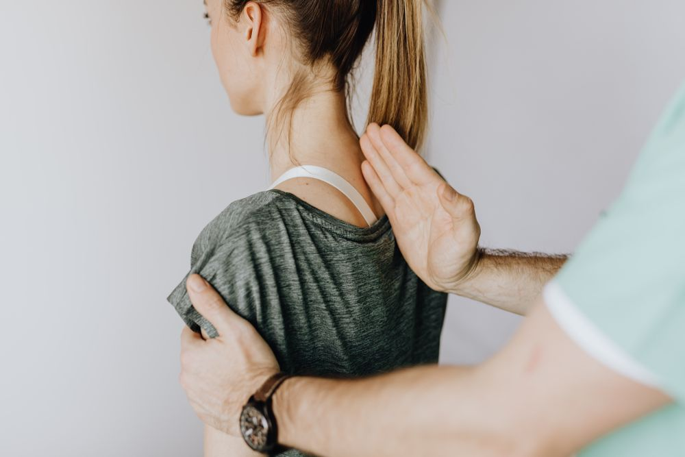
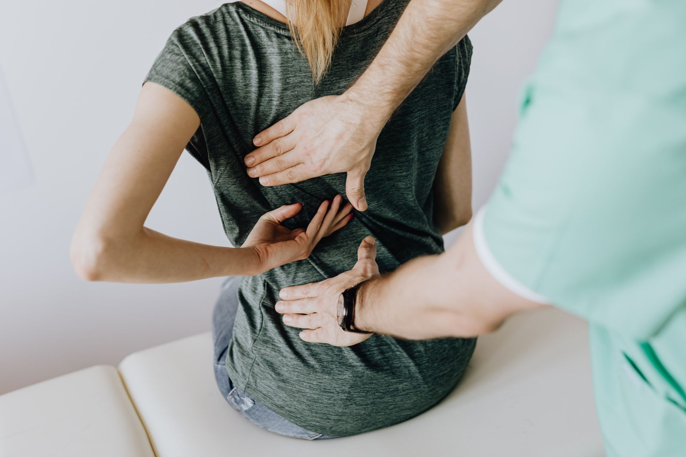

MADE TO
MOVE.
Move with intention.
Return with confidence.
 MOVEMENT IS PERSONAL. YOUR CARE SHOULD BE TOO.
MOVEMENT IS PERSONAL. YOUR CARE SHOULD BE TOO.WHAT DO YOU WANT
TO GET BACK TO?
Your goals shape the conversation. Choose a pathway to learn more.

THE COMEBACK
IS PERSONAL.
Sports rehabilitation starts with understanding your activity, your current movement and the demands of your return.
Explore Sports RehabilitationYOUR JOURNEY. STEP BY STEP.
Clear next steps, from your first conversation to ongoing support.
- 01
Listen & assess
Discuss what matters to you.
- 02
Make a plan
Agree on appropriate goals.
- 03
Move together
Work through guided sessions.
- 04
Build consistency
Follow clinician-supplied home plans.
- 05
Review & adapt
Reflect on progress and adjust.
ONE STEP.
THEN THE NEXT.
After surgery, care begins with appropriate clinical clearance. A physiotherapist can work with you on a measured, individualized return to movement.
Post-Surgery Care

CARE FOR THE WAY
YOU LIVE.
Back care that considers your daily routine, movement and activity goals.
Explore Back CareHUMAN CARE.
INDIVIDUAL
ATTENTION.
Good rehabilitation is a partnership. Get to know the people who will listen, guide and support your movement.
Meet the Therapy Team
Built for your verified team.
Illustrative photography. Clinician profiles are awaiting clinic details.YOUR RECOVERY.
IN YOUR HANDS.
A quieter way to stay organized. Request a session, follow assigned plans and keep your records in one place.
Explore the Patient PortalLocal preview. No real patient records are connected.
A clearer view of your care.
Request a preferred date and time
Track clinician-assigned activities
Keep the important details together
LET’S GET YOU
MOVING FORWARD.
A conversation is a good place to start. Tell us what you want to get back to.
Request an Assessment Request only. A clinic team must confirm your session.